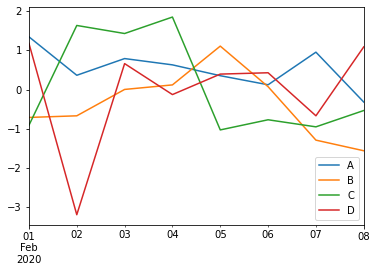
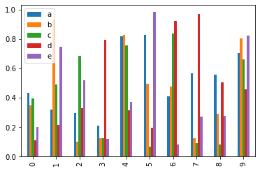
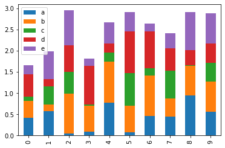
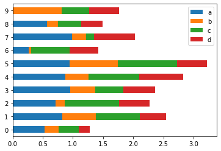
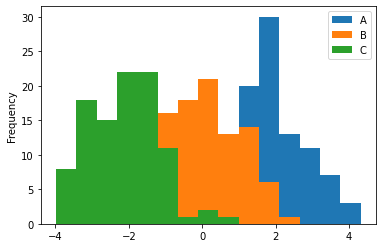
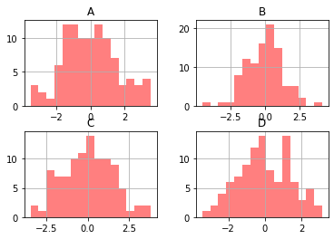
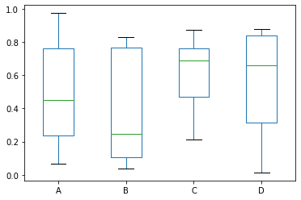
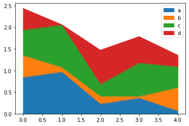
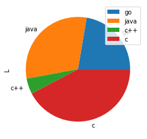

Python Pandas绘图教程（详解版）
Pandas 在数据分析、数据可视化方面有着较为广泛的应用，Pandas 对 Matplotlib 绘图软件包的基础上单独封装了一个
Pandas 之所以能够实现了数据可视化，主要利用了 Matplotlib 库的 plot() 方法，它对 plot() 方法做了简单的封装，因此您可以直接调用该接口。下面看一组简单的示例：
除了使用默认的线条绘图外，您还可以使用其他绘图方式，如下所示：
通过关键字参数
通过设置参数

图9：绘制散点图
plot()接口，通过调用该接口可以实现常用的绘图操作。本节我们深入讲解一下 Pandas 的绘图操作。Pandas 之所以能够实现了数据可视化，主要利用了 Matplotlib 库的 plot() 方法，它对 plot() 方法做了简单的封装，因此您可以直接调用该接口。下面看一组简单的示例：
import pandas as pd
import numpy as np
#创建包含时间序列的数据
df = pd.DataFrame(np.random.randn(8,4),index=pd.date_range('2/1/2020',periods=8), columns=list('ABCD'))
df.plot()
输结果图，如下所示：

图1：Pandas绘图
如上图所示，如果行索引中包含日期，Pandas 会自动调用 gct().autofmt_xdate() 来格式化 x 轴。图1：Pandas绘图
除了使用默认的线条绘图外，您还可以使用其他绘图方式，如下所示：
- 柱状图：bar() 或 barh()
- 直方图：hist()
- 箱状箱：box()
- 区域图：area()
- 散点图：scatter()
通过关键字参数
kind可以把上述方法传递给 plot()。柱状图
创建一个柱状图，如下所示：import pandas as pd import numpy as np df = pd.DataFrame(np.random.rand(10,4),columns=['a','b','c','d','e']) #或使用df.plot(kind="bar") df.plot.bar()输出结果：

图2：Pandas绘制柱状图
图2：Pandas绘制柱状图
通过设置参数
stacked=True可以生成柱状堆叠图，示例如下：import pandas as pd import numpy as np df = pd.DataFrame(np.random.rand(10,5),columns=['a','b','c','d','e']) df.plot(kind="bar",stacked=True) #或者使用df.plot.bar(stacked="True")输出结果：

图3：Pandas绘制柱状图
如果要绘制水平柱状图，您可以使用以下方法：
图3：Pandas绘制柱状图
import pandas as pd import numpy as np df = pd.DataFrame(np.random.rand(10,4),columns=['a','b','c','d']) print(df) df.plot.barh(stacked=True)输出结果：

图4：水平柱状图
图4：水平柱状图
直方图
plot.hist() 可以实现绘制直方图，并且它还可以指定 bins（构成直方图的箱数）。
import pandas as pd
import numpy as np
df = pd.DataFrame({'A':np.random.randn(100)+2,'B':np.random.randn(100),'C':
np.random.randn(100)-2}, columns=['A', 'B', 'C'])
print(df)
#指定箱数为15
df.plot.hist(bins=15)
输出结果：

图5：绘制直方图
给每一列数据都绘制一个直方图，需要使以下方法：图5：绘制直方图
import pandas as pd
import numpy as np
df = pd.DataFrame({'A':np.random.randn(100)+2,'B':np.random.randn(100),'C':
np.random.randn(100)-2,'D':np.random.randn(100)+3},columns=['A', 'B', 'C','D'])
#使用diff绘制
df.diff().hist(color="r",alpha=0.5,bins=15)
输出结果：

图6：直方图绘制
图6：直方图绘制
箱型图
通过调用 Series.box.plot() 、DataFrame.box.plot() 或者 DataFrame.boxplot() 方法来绘制箱型图，它将每一列数据的分布情况，以可视化的图像展现出来。import pandas as pd import numpy as np df = pd.DataFrame(np.random.rand(10, 4), columns=['A', 'B', 'C', 'D']) df.plot.box()输出结果：

图7：绘制箱型图
图7：绘制箱型图
区域图
您可以使用 Series.plot.area() 或 DataFrame.plot.area() 方法来绘制区域图。import pandas as pd import numpy as np df = pd.DataFrame(np.random.rand(5, 4), columns=['a', 'b', 'c', 'd']) df.plot.area()输出结果：

图8：绘制区域图
图8：绘制区域图
散点图
使用 DataFrame.plot.scatter() 方法来绘制散点图，如下所示：import pandas as pd import numpy as np df = pd.DataFrame(np.random.rand(30, 4), columns=['a', 'b', 'c', 'd']) df.plot.scatter(x='a',y='b')输出结果：
图9：绘制散点图
饼状图
饼状图可以通过 DataFrame.plot.pie() 方法来绘制。示例如下：import pandas as pd import numpy as np df = pd.DataFrame(3 * np.random.rand(4), index=['go', 'java', 'c++', 'c'], columns=['L']) df.plot.pie(subplots=True)输出结果：

图10：Pandas绘制饼状图
图10：Pandas绘制饼状图
关注公众号「站长严长生」，在手机上阅读所有教程，随时随地都能学习。内含一款搜索神器，免费下载全网书籍和视频。

微信扫码关注公众号